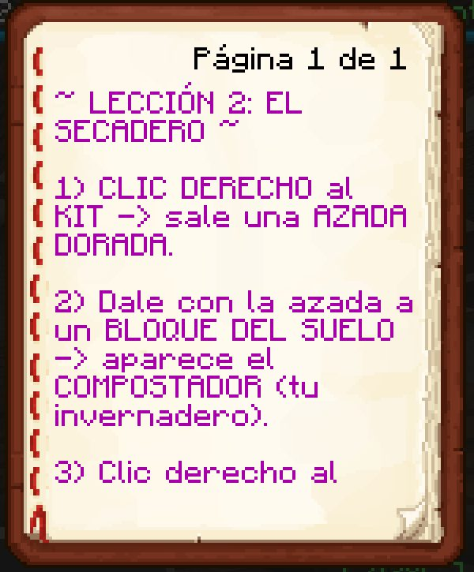

Boletín Oficial del Ayuntamiento del Reino · Se informa, no se alarma
EL HERALDO DEL REINO
Número 2818 de septiembre de 2026Tarde del viernes 18 de septiembre a la mañana del sábado 19
¿DÓNDE ESTÁ EL EMPERADOR? EL MINISTRO LO DA POR MUERTO, UN VECINO POR SECUESTRADO Y OTRO POR ENCERRADO EN EL BAÑO
Diez horas después del golpe, el vecindario empezó a echar en falta a Su Majestad anterior. A las 21.08, Rockchango escribió «otro día sin heraldo», que es la primera infracción del Decreto 1. En el mismo minuto, el Ministro Pan ofreció una explicación: «Duke murió. Supongo, si no, no me lo explico». LetayReaver propuso otra —«atorado en el baño desde hace tres días»— y Kumadoru una tercera: «secuestraron a Duke». El nuevo gobierno desmiente las tres. El Emperador anterior está de honor, que es un sitio distinto de los tres, y nadie le ha hecho nada. El gobierno se lo ha repetido a esta Oficina varias veces sin que se lo preguntara.
Redactado por la Oficina de Prensa del Ayuntamiento
PORTADA
Muerto, secuestrado o en el baño: las tres versiones del vecindario, y el desmentido del palacio
El golpe se dio a las 11.02 del viernes y el vecindario tardó diez horas en
notar que faltaba alguien. Lo notó, como casi siempre, por el periódico. A las 21.08,
Rockchango escribió en el grupo vecinal «otro día sin heraldo», que desde el
Decreto 1 es una frase prohibida, y se convirtió así en el primer infractor del nuevo
régimen. Hay que decir en su descargo que el Decreto 1 no se publicó hasta el número
27, y que el número 27 no había salido. El gobierno no considera que eso le exima.
En el mismo minuto, el Ministro Pan dio la primera versión oficiosa sobre el
paradero de Su Majestad: «Duke murió». Y la matizó enseguida, con un rigor que esta
Oficina le reconoce: «Supongo. Si no, no me lo explico». A las 21.42,
LetayReaver aportó una hipótesis más doméstica: «probablemente está atorado en el
baño, desde hace tres días». Y a las 21.44, Kumadoru la más grave:
«secuestraron a Duke». Nadie mencionó al Servicio Técnico. Esta Oficina lo hace
constar porque el gobierno le ha pedido que lo haga constar.
El palacio contestó por escrito a primera hora del sábado, y esta Oficina transcribe la
nota entera: «El Emperador anterior no ha muerto: se le vería. No está secuestrado: no
se ha pedido rescate, y si se pidiera, no se pagaría, que en este Reino las cosas se
recuperan con colecta. Y no está en el baño: el baño se ha revisado. El Emperador anterior
está de honor, que es un cargo sin ventanilla, y está perfectamente. Nadie le ha
hecho nada. Repito: nadie le ha hecho nada.»
Esta Oficina no tiene medios para comprobar ninguna de las cuatro versiones, la del
Ministro, la del baño, la del secuestro ni la del palacio. Sí puede comprobar la
aritmética: el gobierno ha repetido «nadie le ha hecho nada» dos veces en una nota de
seis frases. Y puede comprobar el registro: el Emperador anterior no ha pisado el Reino
en esta jornada, ni en la anterior. El Ministro, tampoco. Van seguidos.
ADMINISTRACIÓN
Primera audiencia del nuevo Emperador: cinco vecinos atendidos en un minuto, y ninguno ejecutado
A las 11.27 del sábado, el nuevo Emperador abrió su ventanilla y concedió
audiencia a cinco vecinos a la vez, que es un récord para cualquier monarca del Reino
y, como hace notar el propio gobierno, cuatro más de los que concedió el anterior en toda la
semana. Esta Oficina resume las resoluciones, que se leyeron en el orden en que las firmó.
A Rockchango, el infractor de la noche anterior, se le confirmó el Decreto 2 —los
610 eran 10, y se pagaron— y se le resolvió la otra queja que llevaba: el frasco de la
boticaria se le devolvía cada vez que se lo bebía, y el aviso le pedía el papel que ya
había entregado. A Gaaraham03, lo mismo con sus frascos, que además, con el inventario
lleno, se le caían al suelo; recibió uno nuevo. A Agustin.F, que Armadura está
a doce pasos de Bao y no a tres, como decía el libro. A Mazitrvrs y a _Cafecito_,
que lo que guardaban en el zurrón no lo veía la tarea, y que el zurrón ya se lo
devuelve.
Ninguno de los cinco fue ejecutado. Ninguno fue multado, ni siquiera el infractor. Tres de
los cinco recibieron la fórmula de siempre —«no era cosa tuya»—, que el Ministro ya
había satirizado en el número 26 y que el nuevo gobierno mantiene, según fuentes de
palacio, porque es verdad, y porque el que decide ahora lo que es cosa de quién es
él.
EL PARTE DEL PULSO
El primer cierre técnico del régimen: los frascos, el zurrón, los libros y la tinta de los cacahuates

La Lección 2 del Secadero, tal y como la leyó Gaaraham03 a las 08.25: el paso 3 se cortaba en «clic derecho al» y no había página siguiente. Ahora la hay. El vecino, con razón, preguntó «¿clic a qué?».Archivo Municipal · pase el ratón para revelarla
El nuevo gobierno cerró el Reino a las 11.12 del sábado para su primera revisión
del pulso y hace saber, por medio de esta Oficina, que fue la más grande de la
historia. En lo que se puede comprobar, lo fue. Por orden.
Los frascos de la Alquimista. Doce catas con el mismo defecto: el frasco se
devolvía solo cada vez que alguien se lo bebía, así que no pasaba nada ni se gastaba, que
es literalmente lo que denunció Gaaraham03 el viernes. Ahora se gasta. Y si en las catas que
obligan a llegar a algún sitio se acaba el tiempo o te mueres por el camino, te dan
otro frasco, cosa que antes no pasaba y dejaba a la gente sin frasco y sin encargo · El
zurrón ya no se queda los frascos, y los que tenía dentro los devuelve al abrirlo; y
cuando le hablas a un vecino que te pide algo que tienes guardado, te lo pone en la
mano, que era por lo que no se lo cogían a nadie.
Los libros: veintiséis páginas que se cortaban a media frase, la de la fotografía
entre ellas. Ahora siguen en la página siguiente · La tinta de los cacahuates: treinta
y siete resguardos de premio llevaban delante del número una marca del cajista que se leía
como un 6. Limpios · Y del resto, en un párrafo: Armadura, a doce pasos; la Cola ya no da
por bebida cualquier otra cosa; y en el Yogur, «con la vida llena» quiere decir llena,
no la mitad.
El gobierno se atribuye todas estas medidas, cosa que es cierta, y añade que el
anterior no firmó ninguna, cosa que también lo es. Ninguna incidencia reviste gravedad
y todas estaban previstas, aunque ahora esta Oficina no sabe si por quién.
EL MERCADO
Las cuentas de la semana, al cierre del sábado: lo que se reclama, lo que se debe y lo que vence
Sábado, pliego del mercado, y esta semana el mercado del Reino ha sido
de deudas más que de precios. Esta Oficina las ordena por importe.
La más alta: «150 y contando». Es lo que la Encargada del Orden reclama a
kum4shiro desde el número 24, sumando costas y unas lámparas, sobre una sanción de
veinte diamantes de la que, según ella, se pagaron diez. El plazo que le dio fue el final
de la semana, y la semana acaba mañana. El sancionado sostiene que le obligaron. No consta
pago.
La más reclamada: 610 cacahuates. Los pidió Rockchango el viernes a
primera hora, con el resguardo en la mano. El gobierno ha resuelto que eran 10 y que se pagaron. En el
mercado del Reino, por tanto, 600 cacahuates acaban de dejar de existir sin haber
existido nunca. Es la mayor corrección monetaria de la historia del Reino y no le ha costado
nada a nadie.
La más concreta: las linternas. Rockchango pidió al Ministro que le devolviera
lo que le rompieron en el incendio, y rebajó enseguida la petición a las linternas,
«que esas me costaron hierro». El Decreto 3 dice que se devolverán cuando aparezca el
Ministro, que tiene el hierro. El Ministro no ha aparecido. El precio del hierro, en
consecuencia, no se ha movido.
Y la más rentable de la jornada no fue una deuda: fue LetayReaver, que entre las
23.26 y la 01.35 cerró ocho encargos seguidos —del naufragio a la mina, pasando por
unas piedras en bolsitas— y cobró los ocho. Esta Oficina no sabe cuánto ha ganado. Sabe que
a la hora de repartir no le debe nada a nadie, que esta semana es mucho decir.
El parte de la jornada
Duración de la jornada
19 h 12 min, de las 14:26 a las 09:38
Cuentas en el Reino
8 vecinos, ninguno de esta administración
Altas tramitadas
1, Nosy09, a las 19:33
Máxima concurrencia
5 a la vez, a las 08:13
Defunciones
1
Encargos cerrados
16
Encargos cerrados por LetayReaver
8, en 2 h 9 min
Horas que tardó el vecindario en notar el golpe
10
Versiones sobre el paradero del Emperador
4, contando la oficial
Versiones comprobables
0
Infracciones al Decreto 1
1
Sanciones impuestas
0
Vecinos en la primera audiencia
5
Vecinos ejecutados
0
Páginas de libro que se cortaban
26
Resguardos con tinta de más
37
Cacahuates que dejaron de existir
600
Apariciones del Emperador anterior
0
Apariciones del Ministro
0
Aviso oficial
AVISO DEL GOBIERNO. Se recuerda al vecindario que el Decreto 1 sigue en vigor
y que su primera infracción se ha perdonado por esta vez. La segunda, también, porque este
gobierno es magnánimo y porque no tiene cárcel: el Centro de Reconsideración lleva vacío desde
que se inauguró y el gobierno no piensa estrenarlo con un lector del Heraldo.
Sobre el Emperador anterior, se ruega al vecindario que deje de especular. No ha
muerto, no está secuestrado y no está en el baño. Está de honor. Quien tenga noticias de él,
que las presente en la ventanilla, donde serán atendidas con mucho interés.
NOTA DE ESTA OFICINA: a Demaxxp, fallecido ardiendo, esta casa le desea pronta
recuperación, que en este Reino es inmediata. Y al Emperador anterior, esté donde esté, esta
Oficina le guarda la sección de siempre, en negro y oro, por si vuelve a decir algo.